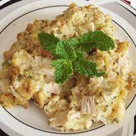

Chicken and Dressing Casserole

True Southern chicken and dressing recipe. Handed down from my girlfriend's grandmother. Easy and delicious.
This recipe is an excellent alternative to cooking the full Thanksgiving meal. If you are
not planning on having a big family get together this recipe easily satisfies that turkey
and dressing craving without all the fuss. Paired with our Green Bean Casserole
and Buttermilk Biscuits this meal is sure to please!
Ingredients
- 2 pounds boiled chicken, shredded
- 1/2 stick of butter
- 1/2 can cream of celery soup
- 1/2 can cream of chicken soup
- 1/2 can of evaporated milk
- 1 box cornbread stuffing mix
- 1 1/2 cups chicken broth
*Preheat oven to 425 degrees*
Steps
- Take chicken, shred it, and place in casserole dish.
- Melt butter in a small bowl. Add soups and milk. Pour over chicken in casserole dish.
- Mix stuffing with chicken broth and spoon over mixture in casserole dish. DO NOT stir layers together.
- Bake at 425 degrees for 25 minutes or until brown.
Home